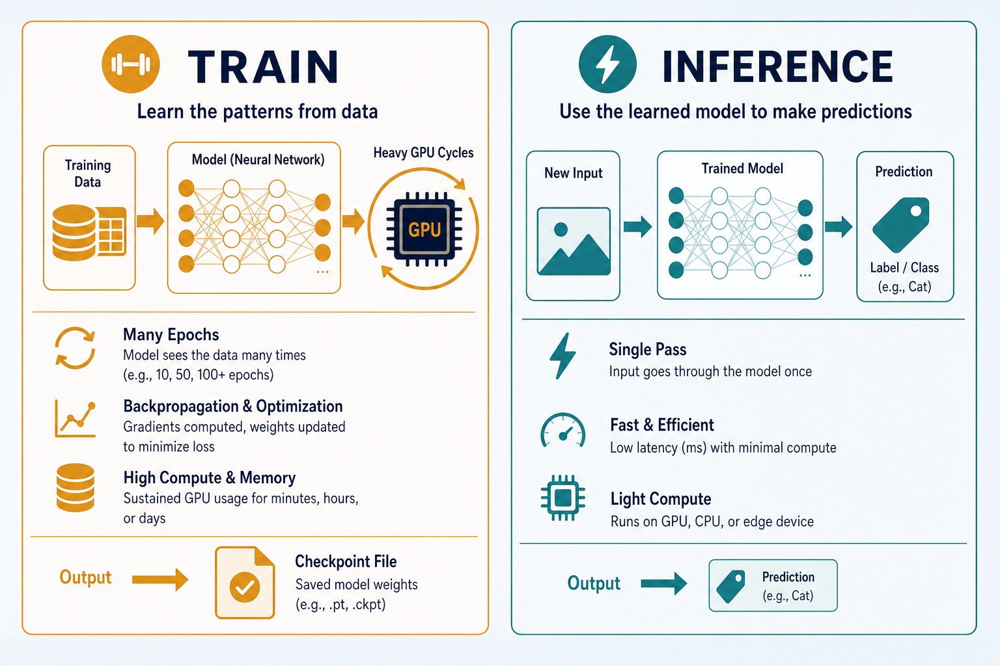

Train With GPU · PyTorch / TF
Where models actually learn: HF/Kaggle data, PyTorch or TensorFlow, many GPU epochs — then export weights. The gym grows the muscles; the phone app only shows the flex.
Demos illustrate inference — training lives elsewhere
Browser demos
Show the flow; they do not replace GPU training or epoch loops.
Real learning
Needs labeled data + GPU hours until val accuracy is sane.
Then plug in
Export a checkpoint and embed weights in UI demos (self-driving-car, sentiment…).
Practical checklist so you do not rebuild the stack every time.
Key ideas · the stack in practice
PyTorch
Flexible loop — most lab training. Explicit backward / step for debugging shapes.
TensorFlow
Softmax regression + Embedding Projector. Keras fit() for small classifiers.
HF + Kaggle
Pre-labeled sets with documented splits — prefer Hub cards over scraped labels.
GPU online: Colab / Kaggle / cloud. Free tiers ≈ MiniLM / small CNN; large full fine-tunes need paid GPU or LoRA.
Two layers of work
| Layer | Job | Owns | Output |
|---|---|---|---|
| Training | HF/Kaggle → notebook → many GPU epochs | optimizer · data pipelines · eval loops | checkpoint |
| Inference | load model → predict | forward pass only | label / action |
Mixing them is why people try to “train in the browser.” See 06-train-infer.md.
GPU training stack

Data → GPU epochs → checkpoint. The heavy path runs once (or rarely); demos only load the result.
Train vs inference split

Left panel burns GPU hours; right panel is what users click in the browser.
Watch val curves · export the best checkpoint

Ship the best validation checkpoint, not the last epoch. Gate before export: val stable 2–3 epochs + a confusion matrix that isn’t “always majority class.”
Worked example · sentiment three-class
Hub dataset
80/10/10 split; do not peek at test while tuning. Prefer documented Hub cards.
Kaggle GPU
Fine-tune MiniLM · AdamW · batch 16–32 · 3–5 epochs · watch val F1.
Export → demo
Save best.pt on val improve · load once at demo startup.
Val F1 stalls <0.7 while train soars → stop: overfit or noisy labels — fix data before more GPU hours.
Where to run · hardware reality
Free GPU notebooks
Enough for MiniLM / small CNN. Gate: one CPU batch with shapes + finite loss before .cuda().
Batch vs VRAM
Cut batch, grad accumulation, smaller backbone, or LoRA. AMP often ~2× throughput.
Paid / sustained
Large full fine-tunes — or stay on LoRA / PEFT on free tiers.
Deeper dive · hygiene & gates
Budget before Run
Adam ≈ 2× param memory on top of weights. OOM at batch 32 → batch 8 + accum 4, or LoRA (<1% params).
Checkpoint hygiene
Save {epoch, val_metric, state_dict, tokenizer, seed}. Pin Hub revision. Prefer safetensors when sharing.
Silent leakage
Split by document/user id before shuffle. Stratify rare labels. “Too perfect” confusion matrix = smell.
When to stop
Early-stop val loss · patience 2–3. Warmup + cosine matters more on full fine-tunes than tiny heads.
Framework pick
PyTorch to debug by hand; TF when Projector / existing TF notebook. Don’t dual-maintain one demo.
Colab / Kaggle
Disconnect wipes /content — push to Drive/Hub every N epochs. Profile 1 epoch × planned epochs first.
Decision guide
| Situation | Prefer | Avoid / why |
|---|---|---|
| Teaching demo, few labels, need ckpt today | Hub pretrained + 2–5 epoch fine-tune on free GPU | Training a Transformer from scratch |
| Shape mismatch / broken graph | CPU, batch 1–2, print shapes before .cuda() | Burning GPU quota on broken graphs |
| Val high, train much higher | Best-val ckpt + more regularization / fewer epochs | Shipping last-epoch weights |
| Need Projector / softmax lab | Existing TensorFlow path | Rewriting the stack in PyTorch “for purity” |
| Large model, limited VRAM | LoRA / PEFT or smaller backbone | Full fine-tune of huge models on free Colab |
| Demo must load in browser fast | Small classifier / MiniLM export | Multi-GB chat checkpoint in static HTML |
Case Study
Produce weights for the lab sentiment demo (neg / neu / pos) without training in the browser.
Inputs
Hub (or Kaggle) labeled reviews, 80/10/10 split; MiniLM sequence-classification head; Colab/Kaggle GPU session.
Steps
CPU smoke batch → GPU fine-tune 3–5 epochs, AdamW, batch 16–32 → track val F1 + confusion matrix → save best.pt on improvement → export into demo assets → browser only runs forward passes.
Output
demo loads once at startup; clicks stay low-latency; notebook holds the reproducible train script + seed + dataset revision.
Verify
val F1 not stalled while train accuracy → 99%; best-val not last-epoch; artifact size fit for the demo; GPU disabled while debugging prints.
Lab Checklist
Pick a labeled dataset and write down train/val/test sizes
Run a 1-batch CPU smoke test (shapes + finite loss)
Fine-tune on GPU for a few epochs while logging val metrics
Save the best validation checkpoint (not only the final epoch)
Export weights + label map into a demo or Hub folder
Load the export in an inference-only path and predict on 5 held-out examples
Record seed, LR, and dataset revision next to the checkpoint
Estimate artifact size / load time against the demo’s constraints
Lab checklist — GPU train path

Easy to go wrong
Training in the browser demo
Demos are for inference — don’t expect on-device epoch loops.
No validation split
You ship an overfit checkpoint that looks great on train only.
Forgetting to export
Notebook session ends — weights gone with the runtime.
Exporting the last epoch
Prefer best-val; last epoch often overfits. Also: debug on CPU first.
Short practical path
Deep links
pytorch-training
Manual epoch loop details.
tensorflow-training
compile + fit twin.
train-infer
Two-phase mental model.
Also: huggingface · kaggle · demos self-driving-car / sentiment.
Train on GPU,
infer in the lab.
notes/train-gpu.md — checklist, stack, gates, and export habit.
Open note →